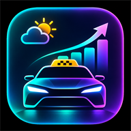

ЦЕЛЬ НА МЕСЯЦ
— / 200 000 ₽
——
0%цели

ритмплан сменПЛАН НА СЕГОДНЯ
Краснодар · добавь автомобиль в профиле
ТВОЙ РАСЧЁТ
ДО ЦЕЛИ
Расчёт по последней смене; обслуживание и износ авто не включены.
АВТОПЛАН
Установи приложение на своём устройстве, заполни профиль и добавь смены. Данные других водителей в APK не включены.
ПОГОДА + СОБЫТИЯ + ТВОИ СМЕНЫ
ПЛАН НА НЕДЕЛЮ
Сопоставляю часы спроса, погоду и события.
ЛУЧШИЕ ОКНА
Индекс спроса — ориентир, не обещание заказов. В приложении нет внутренних данных Яндекс Про о спросе по районам. Оценка складывается из обычных часов поездок, прогноза погоды, афиши и твоих записанных смен.
ГОРОДСКАЯ АФИША
Афиша может пропускать или менять события. Для каждого события есть ссылка на источник. Влияние мероприятия на спрос оценочное.
ТВОИ РЕЗУЛЬТАТЫ
НОВАЯ ЗАПИСЬ
НЕДАВНИЕ ВЫХОДЫ
Новая установка начинается с пустой историей. Добавляй завершённые смены — приложение сохранит их только в этом экземпляре приложения.
МАШИНА И ЦЕЛИ
ПЛАНИРОВАНИЕ
Погода загружается для указанного города. Автоматическая афиша доступна для Краснодара. График учитывает часы пик, погоду, события и твои записи смен.
Доходы, настройки и журнал хранятся в памяти браузера на этом устройстве. За погодой и расписанием событий приложение обращается к интернету.